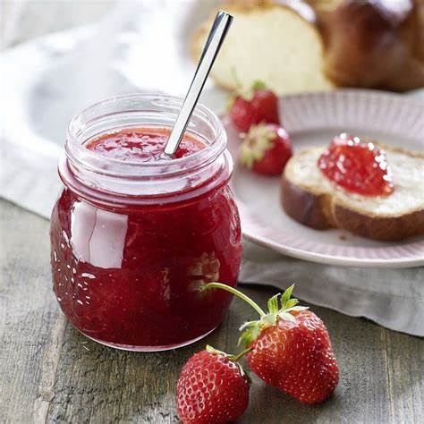
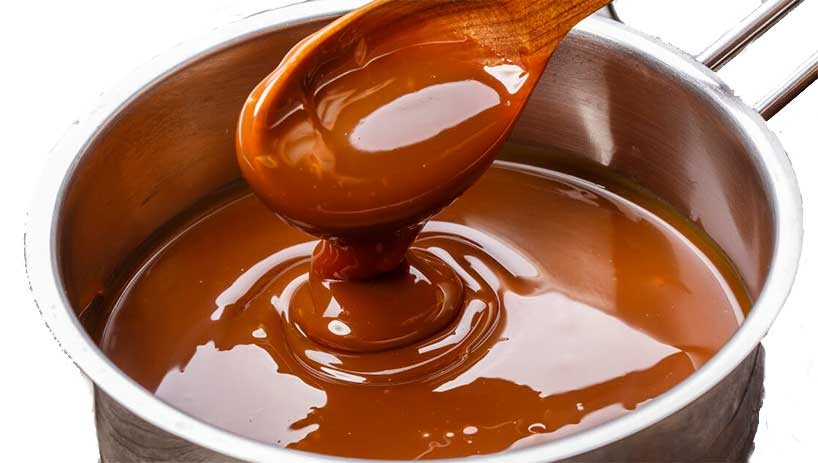
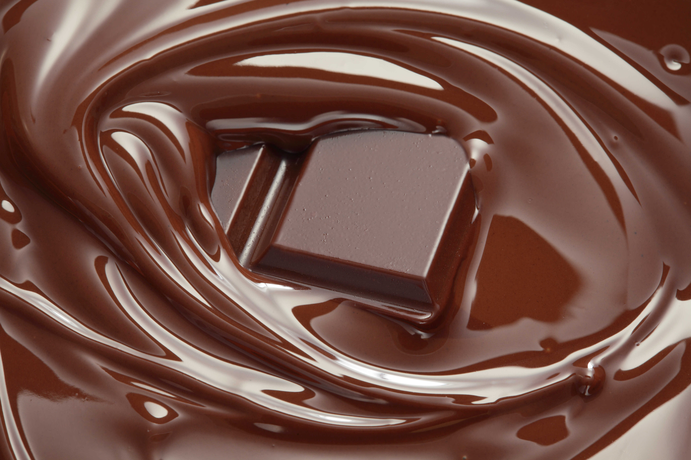
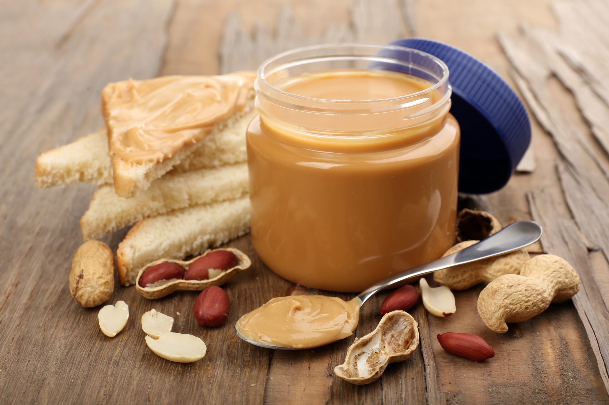
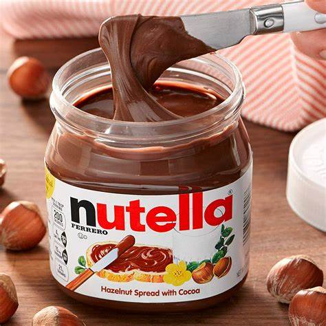

Elige el sabor de tus biscochos

delicosas y frescas laminas de fresas, mesclado en crema pastelera dulce

Rica mermelada de fresa casera echa a mano

relleno de cajeta quemada casera echa a mano
Rica mermelada de fresa casera

Relleno de chocolate turin

cremosa y nutritiva crema de cacahuate

Relleno de deliciosa crema de avellana(Rutela)
Regresar
Rellenos